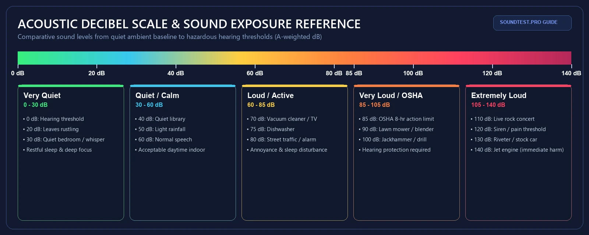

Compare your reading against common sound levels from 20 to 140 dB.
A reference of typical decibel levels for everyday sources, transport, construction, entertainment, and the workplace. Use it to interpret what your browser dB meter is showing.

Everyday sounds at a glance
Typical A-weighted levels at the listed distance. Actual values vary by environment, source, and microphone position.
| Sound | Typical level | Distance | Category |
|---|---|---|---|
| Threshold of hearing | 0 dB | — | Reference |
| Rustling leaves | 20 dB | 1 m | Very quiet |
| Whisper | 30 dB | 1 m | Very quiet |
| Quiet library | 40 dB | — | Quiet |
| Quiet bedroom at night | 30 dB | — | Quiet |
| Refrigerator hum | 40 dB | 1 m | Quiet |
| Rainfall | 50 dB | — | Moderate |
| Normal conversation | 60 dB | 1 m | Moderate |
| Office environment | 60 dB | — | Moderate |
| Washing machine | 65 dB | 1 m | Moderate |
| Vacuum cleaner | 70 dB | 1 m | Loud |
| Passenger car | 70 dB | 10 m | Loud |
| TV at normal volume | 70 dB | 1 m | Loud |
| Shower | 70 dB | — | Loud |
| Dishwasher | 75 dB | 1 m | Loud |
| City traffic | 80 dB | inside car | Loud |
| Alarm clock | 80 dB | 1 m | Loud |
| Doorbell | 80 dB | 1 m | Loud |
| Lawn mower | 85 dB | 10 m | Very loud (OSHA action level) |
| Heavy traffic | 85 dB | 5 m | Very loud |
| Blender | 90 dB | 0.5 m | Very loud |
| Hair dryer | 90 dB | 0.5 m | Very loud |
| Subway train | 95 dB | 10 m | Very loud |
| Motorcycle | 95 dB | 7 m | Very loud |
| Power tools | 100 dB | 1 m | Very loud |
| Jackhammer | 100 dB | 15 m | Very loud |
| Cordless drill | 100 dB | 1 m | Very loud |
| Construction site | 100–110 dB | 15 m | Very loud |
| Chainsaw | 110 dB | 1 m | Extremely loud |
| Car horn | 110 dB | 1 m | Extremely loud |
| Rock concert (loud) | 110 dB | — | Extremely loud |
| Power saw | 115 dB | 1 m | Extremely loud |
| Ambulance siren | 120 dB | 1 m | Pain threshold |
| Thunderclap | 120 dB | — | Pain threshold |
| Jet engine (30 m) | 140 dB | 30 m | Immediate harm |
Values compiled from WHO Environmental Noise Guidelines (2018), NIOSH, OSHA, and published acoustics references. Use as a reference, not as a personal safety limit.
Very quiet
Threshold of hearing, rustling leaves, whisper at 1 m, quiet bedroom at night. Good for sleep and concentration.
Quiet to moderate
Library, refrigerator, rainfall, normal conversation at 1 m, office. WHO recommends keeping long-term indoor exposure below about 55 dB.
Loud
Vacuum cleaner, shower, TV at normal volume, city traffic inside a car, alarm clock. Sustained exposure starts to interfere with concentration.
Very loud
Lawn mower at 10 m, blender, hair dryer, subway, motorcycle. OSHA's 85 dB TWA workplace action level falls in this range.
Extremely loud
Power tools, jackhammer, chainsaw, car horn at 1 m, loud rock concert. Prolonged exposure causes hearing damage; hearing protection required.
Pain and immediate harm
Ambulance siren, thunderclap, jet engine at close range. Single short exposures can cause immediate hearing damage.
Frequently asked questions about decibel levels
What dB level is considered quiet?
Background levels around 30 dB or below are considered quiet. A quiet bedroom at night sits near 25 to 30 dB, a quiet library near 35 dB, and a soft whisper at 1 meter is about 20 dB.
What dB level is safe for long-term exposure?
WHO environmental noise guidance treats long-term exposure above roughly 55 dB as a potential sleep and health risk. OSHA sets 85 dB TWA as the workplace action level for hearing protection. SOUNDTEST.PRO records are documentation-grade estimates; these are reference numbers, not personal safety limits.
How loud is 70 dB compared to everyday sounds?
70 dB is roughly the noise level of a vacuum cleaner at 1 meter, a passenger car at 10 meters, or a normal conversation at 1 meter. It is loud enough to make sustained conversation harder but not loud enough to cause immediate hearing damage.
What dB level can cause hearing damage?
Short-term exposure above roughly 110 dB can cause immediate hearing damage. Sustained exposure above 85 dB TWA (8-hour average) is the OSHA action level for hearing protection. SOUNDTEST.PRO records are documentation-grade estimates, not certified measurements; consult a hearing specialist for personal risk assessment.
How accurate is this dB reference chart?
The values shown are typical ranges from public sources including WHO Environmental Noise Guidelines, OSHA, NIOSH, and published acoustics references. Actual sound levels vary by distance, environment, and the specific source. Use the chart to interpret what your SOUNDTEST.PRO browser dB meter is reading, not as a substitute for a calibrated Type 1 or Type 2 sound level meter.
Can I use these values to file a noise complaint?
Reference values help you interpret a reading but do not by themselves prove a violation. Local noise ordinances use their own time-of-day and location-specific limits, and formal enforcement usually requires measurements from a certified instrument. Use SOUNDTEST.PRO records as supporting documentation and check your local ordinance before escalating.
SOUNDTEST.PRO is a documentation-grade estimate tool, not a certified sound level meter. Verify any formal claim with calibrated equipment and qualified measurement procedures.
Measure your own environment
Open the browser dB meter to see your current A-weighted reading, peak, and LAeq in real time. Compare what you see to this reference chart.
Sources behind these numbers
The values are typical A-weighted sound pressure levels compiled from WHO Environmental Noise Guidelines for the European Region (2018), NIOSH and OSHA occupational noise publications, and standard acoustics references. Distances are approximate and assume typical indoor or outdoor conditions.